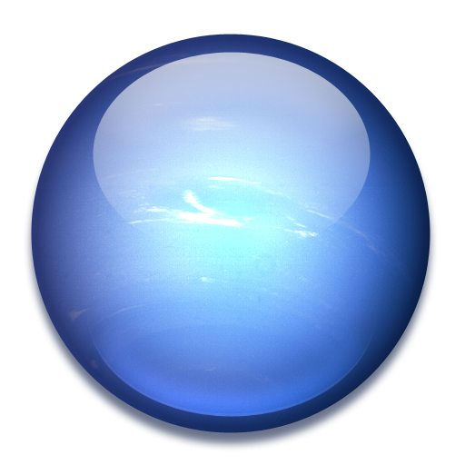

Знайомство із Сонячною системою
Венера

Сонце

Меркурій

Венера

Земля

Місяць

Марс

Юпітер

Сатурн

Уран 
Нептун

Плутон

У стародавніх римлян Венера була богинею кохання і краси. Відстань планети до Сонця 108,1 млн. кілометрів.
Венера — найближча сусідка Землі. Вона стала першою планетою, яку почали вивчати за допомогою зондів ще у 1962 році. У грудні 1978 року 4 безпілотні космічні кораблі — «Піонер Венера 1» (США), «Піонер Венера 2» (США), «Венера 11» (СРСР) та «Венера 12» (СРСР) приземлялись або виходили на орбіту Венери.
Хоч у планети схожі із Землею розміри і будова, проте умови на її поверхні нагадують справжнє пекло. Венера має щільну атмосферу, яка прикриває поверхню планети. Хмари в основному складаються тут із сірчаної кислоти, що надає Венері жовтувато-білого кольору. Дощі на Венері кислотні. На ній два материки розміром з Африку й Австралію, можливо є і моря. Діючі вулкани дозволяють припустити наявність тих самих процесів над поверхнею, що й на Землі. Один з вулканів — це велетень, який має понад 240 км в основі і 11 км у висоту. Ядро планети складається з нікелю і заліза, як і в Землі.
Венера одержує вдвічі більше сонячного світла, ніж Земля, оскільки знаходиться ближче до Сонця. її щільна атмосфера з діоксиду вуглецю поглинає тепло, але температура поверхні залишається +482 °С і спроможна розплавити свинець!
Венера обертається у напрямку, протилежному Землі. Сонце встає там на заході. Ця планета обертається так повільно, що 1 день на ній дорівнює 243 земним. Але рік коротший, всього лиш 225 земних днів.
Як і в Меркурія, у Венери нема супутників, але її гравітаційна сила така ж, як і в Землі.
70% всієї площі Венери — рівнини, 20% — низини і 10% — гірські райони. Хмарний шар настільки товстий, юз поверхні Венери не можна почити Сонця